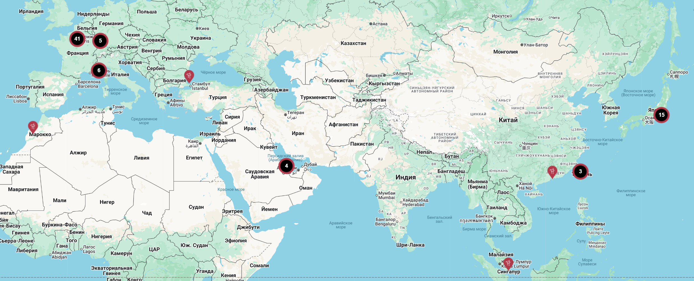

История вкуса, рожденная во Франции — и ставшая искусством по всему миру.
Всё началось с маленькой пекарни в сердце Парижа. Молодой кондитер с безупречным вкусом и страстью к деталям мечтал создать место, где сладость становится искусством, а десерт — эмоцией. Так родилась Maison Douce — «Дом нежности».
Сегодня Maison Douce — это сеть изысканных кондитерских от Парижа до Токио, от Алматы до Нью-Йорка, где традиции сочетаются с современным вкусом.
Maison Douce — это не просто десерты. Это уважение к ремеслу, природе и человеку. Мы создаём всё вручную, отбирая натуральные ингредиенты: ароматное миндальное масло из Прованса, бельгийский шоколад и свежие ягоды.
Мы верим, что истинная роскошь — в простоте и честности. Каждый наш десерт — результат сотен проб, экспериментов и вдохновения. Мы не копируем — мы создаём.
За почти четыре десятилетия мы открыли бутики в 18 странах мира. От витрин под Эйфелевой башней до уютных залов на улицах Токио — в каждом уголке Земли наши десерты сохраняют ту самую энергию и нежность, с которой всё начиналось.
Каждый наш кондитер — это художник. Мы гордимся мастерами, которые соединяют точность науки и вдохновение искусства. Каждый рецепт проходит путь от творческой идеи до идеальной текстуры и вкуса.
Maison Douce объединяет более 400 человек в 12 странах. Мы — семья, где уважают традиции, поддерживают развитие и вдохновляют на открытие нового.
Мы верим, что сладость — это не просто вкус, а состояние души. Каждое наше изделие — часть большой истории, написанной с любовью и вдохновением.